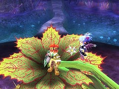
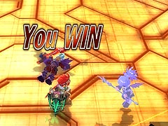

(イナセなお面)
目次 > ゲームについて > 日本Falcom 攻略 > ZWEI II > 情報
らんの眼
ZWEI II (ツヴァイ 2、ZWEI II Plus)
| 概要 | 情報 | 攻略チャート |
| フード交換 | ペットについて | ボス戦 |
| 敵キャラ一覧 | ハンターランク | G-コロッセオ |
| アイテム一覧 | ガジェット一覧 | トレジャー一覧 |
| ダンジョン一覧 | クリアデータ特典 | Plusの追加要素 |
| ZWEI II攻略へ | 目次へ戻る |
| [ 1 ] [ 2 ] [ 3 ] [ 4 ] [ 5 ] [ 6 ] [ 7 ] |
| Z-POD によるBGM バグ |
| 螺旋要塞メルセデク出現後は、アルッテの町などのBGM が通常とは違うものが流れるようになります。 しかし、以下の手順を使うと、普段流れていたBGM を一時的に流すことができます。 1.Z-POD で何も再生していない状態にする 2.Z-POD で適当な曲を流す 3.Z-POD を消し、曲を停止させる あくまでも一時的なものなので、マップを切り替えるなどすると、元に戻ってしまいます。 |
| 恐怖の行動不能状態 |
| アルウェンの「凍結の魔法」や、ペットのフェアリーの「ふしぎな踊り」により動きを封じられた敵は、突風による強制移動や、「常闇の魔法：奥義 ダークインパルス」による吸い寄せなどの強制移動を無効化してしまいます。 |
| カッパには通じない |
| カッパフィールドでは、リフト代として1 プレー100 ペンネの費用がかかりますが、この費用は「イナセなお面」を付けていても変わりません。まあ、たかが100
ペンネなんですけれど、カッパフィールドは難しいので、チリも積もれば山となり、最終的には莫大なお金が消えていくので、少しでも安くしたいのが本音です。 (イナセなお面) |
| 増えない万歩計 |
| アルウェンが魔法をうち続けている間、いくら歩いても万歩計の歩数が増えません。 (万歩計) |
| アビスフラワーの上に乗る |
| まず、グラインドギアに乗った状態で、アビスフラワーの噛みつき攻撃(アビスフラワーのHP が回復する攻撃)をわざと食らいます。そして、噛みつかれている間、攻撃ボタンと上ボタンを押し続けていると、吐き出されたときにアビスフラワーの上に乗ることができます。 上に乗った状態ならば、ほとんどの攻撃を食らいませんが、噛みつかれたときに最低1 度はダメージを受けるのでプラチナメダルを狙う場合は使えません。 また、ラグナが画面の奥の方を向いていると、アビスフラワーも奥の方へ攻撃を仕掛けるので、見ていてちょっとおもしろいです。  |
| アルウェンがワープ |
| 真テルミドール戦で、グラインドギアに乗った状態で「パートナーとの交代」を封じられると、真テルミドールを倒した後に、突然ラグナの後ろにアルウェンがワープしてきます。  (問題のシーンはこの後です)  (ちなみに、ジャンプ中に「パートナーとの交代」を封じられると、空中に固定されます) |
| [ 1 ] [ 2 ] [ 3 ] [ 4 ] [ 5 ] [ 6 ] [ 7 ] |
| 概要 | 情報 | 攻略チャート |
| フード交換 | ペットについて | ボス戦 |
| 敵キャラ一覧 | ハンターランク | G-コロッセオ |
| アイテム一覧 | ガジェット一覧 | トレジャー一覧 |
| ダンジョン一覧 | クリアデータ特典 | Plusの追加要素 |
| ページの上部へ | ZWEI II 攻略へ | 目次へ戻る |